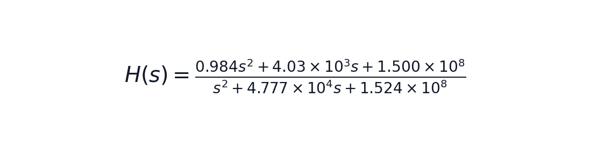
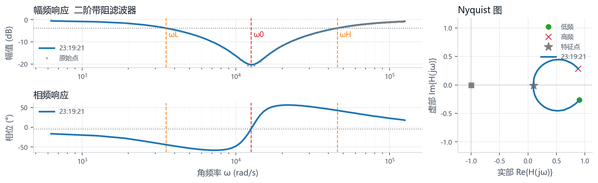

记录本次串口、命令、频率范围和点数，方便复现实测条件。
汇总滤波器族、阶次、关键频率、置信度和期望电路匹配状态。
把 AI 拟合模型拆成可阅读公式、参数和可信度说明，不再只给文本串。
| 时间 | 2026-06-20 23:19:21 |
|---|---|
| 来源 | 文件导入: 07_二阶带阻系统_实测原始.txt |
| 波特率 | 115200 |
| 扫频命令 | SWEEP 100 20000 100 1.2 |
| 期望电路 | Auto |
| 点数 | 200 |
| 起始频率 Hz | 100.009 |
| 终止频率 Hz | 20000 |
| 识别结果 | 二阶带阻滤波器 |
|---|---|
| 滤波类型 | bandstop |
| 阶次 | 2 |
| 特征角频率 rad/s | 12566.4 |
| 特征频率 Hz | 2000 |
| 左截止 Hz | 558.589 |
| 右截止 Hz | 7267.67 |
| 带宽 Hz | 6709.08 |
| 稳定性 | 奈奎斯特判据显示闭环稳定，且稳定裕度较好。 |
| 判定 | 二阶带阻系统 |
|---|---|
| 置信度 | 0.99 |
| Top3 | 带阻/2阶 0.99 / 未知/1阶 0.07 / 高通/1阶 0.03 |
| 关键频率 | 陷波中心 1965 Hz, 阻带宽度 7603 Hz |
| 测量健康 | A 可直接验收（90/100） |
| 测量质量 | 无削顶；输入RMS中位数 0.4240 V；输出RMS中位数 0.3305 V；PA1 DC约 1.641 V |
| AI结论 | 当前数据只能证明被测对象在 100-20000 Hz 范围内呈现带阻趋势；估计关键频率约 1965 Hz，已经超出本次扫频范围，不能把等效传函当最终模型。 |
| 控制校正 | 自动: 暂未生成校正器。 |
| 测量补扫 | 估计关键边界超出当前扫频范围，不能继续按外推频点加密补扫；请先扩大总扫频范围覆盖真实截止点，或把当前频段作为局部已补扫结果验收。 |
| 故障证据 | 暂未触发故障知识库规则 |
| 下一步建议 | 自动: 暂未生成校正器。；请确认测量的是开环频响；如果扫频全程低于 0 dB，请填写目标穿越 Hz，软件会按该频点计算比例增益或超前校正器。；估计关键边界超出当前扫频范围，不能继续按外推频点加密补扫；请先扩大总扫频范围覆盖真实截止点，或把当前频段作为局部已补扫结果验收。 |

| 表达式 | H(s) = (0.9843s^2 + 4033s + 1.500e+08) / (s^2 + 4.777e+04s + 1.524e+08) |
|---|---|
| 参数 | K=0.9843, f0=1.96e+03 Hz, w0=1.235e+04 rad/s, Q=0.258, notch_floor=-21.3 dB |
| 拟合可信度 | 高：模板与扫频数据吻合较好，可作为等效传函参考。 |
| 分子系数 | 0.984275, 4033.03, 1.50027e+08 |
| 分母系数 | 1, 47772.8, 1.52423e+08 |
=== 稳频仪：滤波器频响识别分析报告 ===
系统类型: 二阶带阻滤波器
滤波器族: 带阻滤波器
估计阶次: 2
判阶可靠性: 可靠（置信度 0.95）
期望电路: Auto
期望匹配: 未指定期望电路，按自动识别结果验收。
数据点数: 200
截止/特征判据: band-stop -3 dB edges
--- 识别证据 ---
幅频斜率证据: 低频端 -15.7 dB/dec，高频端 3.9 dB/dec。
幅值跨度: 19.8 dB。
相位跨度: 34.2°。
相位延迟补偿: 未触发。
--- 测量质量诊断 ---
测量质量: 输入RMS中位数 0.4240 V，输出RMS中位数 0.3305 V。
峰峰值: 输入P-P中位数 1.2050 V，输出P-P中位数 0.9485 V。
削顶频点统计: PA0 0 个，PA1 0 个。
测量偏置: PA0 DC≈1.647 V，PA1 DC≈1.641 V。
左侧 -3 dB 角频率 = 3509.72 rad/s
右侧 -3 dB 角频率 = 45664.14 rad/s
陷波角频率 ω0 = 12566.37 rad/s
阻带宽度 = 42154.42 rad/s
陷波深度 = 19.8 dB
特征频点相位 = -3.84 °
=== AI辅助电路识别与智能诊断报告 v2 ===
智能识别: 二阶带阻系统
判定策略: 传统频响分析为主判据：filter_analysis 已可靠判定为二阶带阻系统（置信度 0.95），AI用于传递函数拟合、故障证据链和主动补扫建议。
置信度: 0.99（需补扫确认）
关键频率: 陷波中心 1965 Hz，阻带宽度 7603 Hz
候选排名: 二阶带阻系统 0.99 / 未知系统 0.07 / 一阶高通系统 0.03
模型拟合: 带阻二阶模板: f0=1964.9 Hz, Q=0.26, R2=0.999；RMSE=0.16 dB, 最大残差=0.86 dB；参数={gain_db=-0.138, f0_hz=1.96e+03, q=0.258, bandwidth_hz=7.6e+03, notch_floor_db=-21.3}
传函可信度: 高：模板与扫频数据吻合较好，可作为等效传函参考。
等效传递函数: H(s) = (0.9843s^2 + 4033s + 1.500e+08) / (s^2 + 4.777e+04s + 1.524e+08)；K=0.9843, f0=1.96e+03 Hz, w0=1.235e+04 rad/s, Q=0.258, notch_floor=-21.3 dB；num=[0.9843, 4033, 1.500e+08]；den=[1, 4.777e+04, 1.524e+08]
--- 自动控制校正 ---
自动: 暂未生成校正器。
自然增益穿越: ωgc=无法计算, PM=无法计算, GM=无法计算
推荐校正器: 暂不校正
依据: 暂未生成校正器
使用建议: 请确认测量的是开环频响；如果扫频全程低于 0 dB，请填写目标穿越 Hz，软件会按该频点计算比例增益或超前校正器。
提示: 全扫频范围内开环幅值低于 0 dB，未形成增益穿越。
测量健康: A 可直接验收（90/100）
测量质量: 无削顶；输入RMS中位数 0.4240 V；输出RMS中位数 0.3305 V；PA1 DC约 1.641 V
故障证据链: 暂未触发故障知识库规则
可能故障原因: 暂未发现明显硬件故障；本次补扫建议主要用于提高识别/拟合可信度。
AI实用结论: 当前数据只能证明被测对象在 100-20000 Hz 范围内呈现带阻趋势；估计关键频率约 1965 Hz，已经超出本次扫频范围，不能把等效传函当最终模型。
建议实验动作: 若要确认真实截止点，把总扫频扩到 200-200000 Hz，步进约 2000 Hz。；若要演示中心频率移动，同时改变等效 R 或 C：RC 乘积增大时中心频率降低，RC 乘积减小时中心频率升高。；若演示自动控制校正，先按“控制校正建议”填写目标穿越 Hz，再重新导入同一组数据生成 K 或 Gc(s)。
测量补扫建议: 估计关键边界超出当前扫频范围，不能继续按外推频点加密补扫；请先扩大总扫频范围覆盖真实截止点，或把当前频段作为局部已补扫结果验收。
控制校正建议: 自动: 暂未生成校正器。；请确认测量的是开环频响；如果扫频全程低于 0 dB，请填写目标穿越 Hz，软件会按该频点计算比例增益或超前校正器。
下一步测试建议: 自动: 暂未生成校正器。；请确认测量的是开环频响；如果扫频全程低于 0 dB，请填写目标穿越 Hz，软件会按该频点计算比例增益或超前校正器。；估计关键边界超出当前扫频范围，不能继续按外推频点加密补扫；请先扩大总扫频范围覆盖真实截止点，或把当前频段作为局部已补扫结果验收。
关键特征: 低频-4.8 dB，高频-0.7 dB，低频斜率-17.2 dB/dec，高频斜率5.2 dB/dec，相位跨度28.3 deg，Nyquist到(-1,0)最小距离1.088
无

{kind=link}
{kind=link}